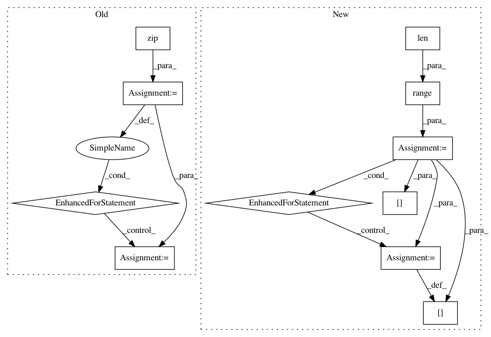

ed2b80836fb92142143d8b7702d5519761671cf5,dipy/reconst/dki.py,,ols_fit_dki,#Any#Any#Any#,640
Before Change
min_diffusivity = tol / -design_matrix.min()
inv_design = np.linalg.pinv(design_matrix)
for param, sig in zip(dki_params, data_flat):
param[0], param[1:4], param[4], param[5] = _ols_iter(inv_design, sig,
min_signal, min_diffusivity)
dki_params.shape=data.shape[:-1]+(18,)
dki_params=dki_params
return dki_params
After Change
min_diffusivity = tol / -design_matrix.min()
inv_design = np.linalg.pinv(design_matrix)
for vox in range(len(data_flat)):
dki_params[vox] = _ols_iter(inv_design, data_flat[vox], min_signal,
min_diffusivity)
return dki_params
def _ols_iter(inv_design, sig, min_signal, min_diffusivity):
In pattern: SUPERPATTERN
Frequency: 3
Non-data size: 11
Instances
Project Name: nipy/dipy
Commit Name: ed2b80836fb92142143d8b7702d5519761671cf5
Time: 2015-07-08
Author: rafaelnh21@gmail.com
File Name: dipy/reconst/dki.py
Class Name:
Method Name: ols_fit_dki
Project Name: openai/baselines
Commit Name: 9b68103b737ac46bc201dfb3121cfa5df2127e53
Time: 2019-05-08
Author: peterzhokhoff@gmail.com
File Name: baselines/common/vec_env/vec_monitor.py
Class Name: VecMonitor
Method Name: step_wait
Project Name: nipy/dipy
Commit Name: 9419d215150bcb2679d5047ab53f88139702ac6e
Time: 2015-07-08
Author: rafaelnh21@gmail.com
File Name: dipy/reconst/tests/test_dki.py
Class Name:
Method Name: wls_fit_dki